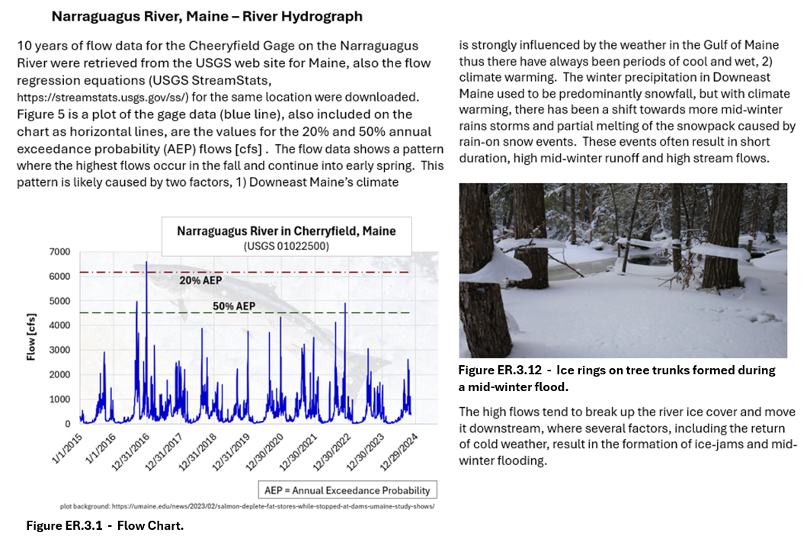
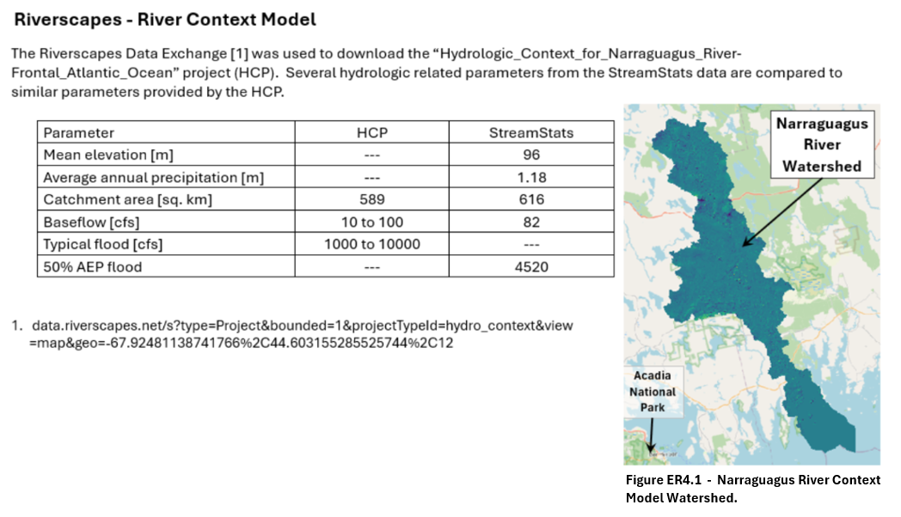

The Narraguagus River is located in Washington County, Maine, a rural area with an average population density
of 12 people per square mile. The Upper Narraguagus River watershed a combination of forests, wetlands and lakes.

Figure ER.1 - Eco-Region for the Upper Naraguagus River.
Bedrock Geology Map

Figure ER.2 - Bedrock geology map of the Upper Naraguagus River.
Hydrology
Upper Narraguagus River sub-watershed - Based on USGS Streamstats (https://streamstats.usgs.gov/ss/):
- Area: 73.4 square miles.
- Mean elevation: 483-feet.
- Average slope (based on 10-m DEM): 6.7%.
- Sand and gravel aquifiers: 11.4%.
- akes, ponds and wetlands: 12.2%.
Eagle Lake elevation is ~400-feet, while Beddington Lake elevation is ~244-feet. The river distance between the two
lakes is 12.8 miles, resulting in an average slope of 0.0023 ft/ft.

Figure ER.3 - Hydrology for the Upper Naraguagus River.
Climate

Figure ER.4 - Climate for the Upper Naraguagus River.
For additional information related to climate and recent climate variability, see:
Rafa Tasnim, et al., 2021. Climate Change Patterns of Wild Blueberry Fields in Downeast, Maine over the Past 40 Years.
Water, 13, 594. https://doi.org/10.3390/ w13050594.